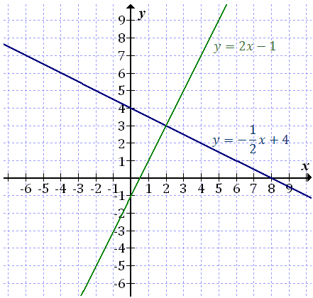

Rozwiązanie układu równań tą metodą polega na narysowaniu prostych w układzie
współrzędnych. Najpierw należy doprowadzić każde równanie do wzoru funkcji liniowej, tzn.:
\(y=ax+b\). Z tej postaci łatwo jest narysować obie proste.
Po narysowaniu odczytujemy punkt przecięcia prostych, który jest rozwiązaniem
układu równań.
Rozwiąż układ równań metodą graficzną: \[\begin{cases} x+2y=8\\ 2x-y=1
\end{cases} \]
Przekształcamy oba równania do postaci \(y=ax+b\): \[\begin{split} &\begin{cases}
2y=-x+8\\ -y=-2x+1 \end{cases} \\[16pt] &\begin{cases} y=-\frac{1}{2}x+4\\ y=2x-1 \end{cases} \\
\end{split} \]
A następnie rysujemy wykresy obu funkcji i odczytujemy
punkt przecięcia:

Zatem rozwiązaniem układu równań jest para liczb: \[\begin{cases} x=2\\
y=3 \end{cases} \]